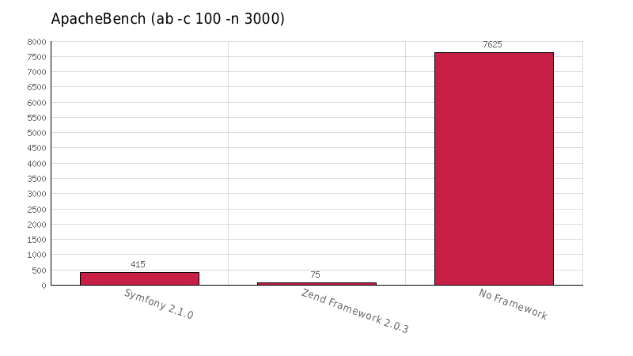
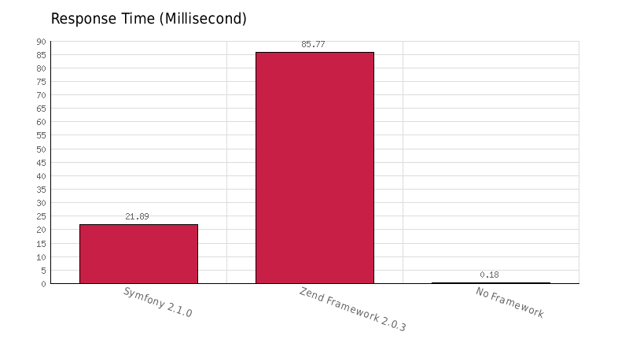
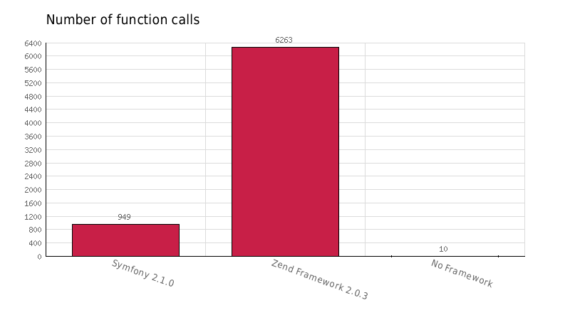
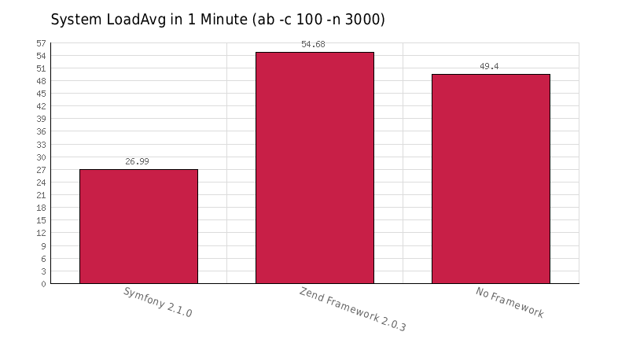
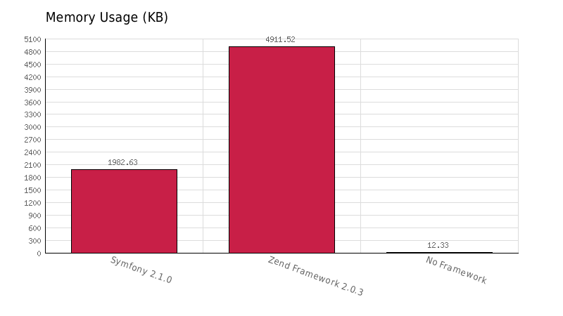
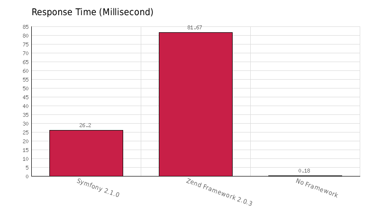
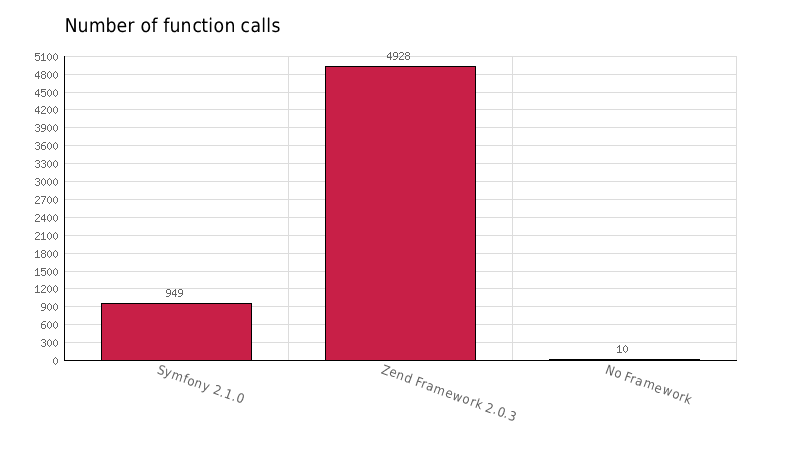
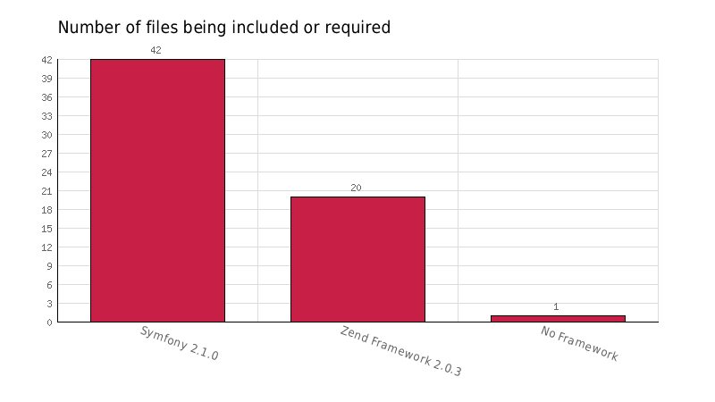
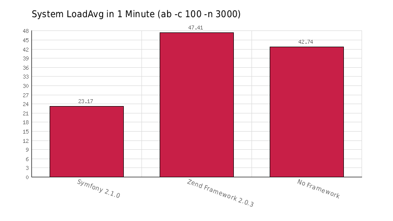

We have full version of ZF2! There's even a Zend Framework 2.0.3 version. Full of optimism I've started reading about it and
full of curiousity I've looked on performance charts. How big was my surprise when i've looked on charts seeing that ZF2 is 4 times slower
than ZF1 Enrise. Said to myself, it's an old post and tests were done on an old
version of ZF2, so probably it's not so bad at the end. Still I didn't think about doing that day any tests by myself.
Few days ago I saw another great post by trq. He in opposition to previous test compared ZF2 with other
decent frameworks (Symfony 2 and Proem). Sadly this time also it didn't satisfy me with the results. For my luck test framework written by trq is
available at Github. In the meantime I've found an module for ZF2 which caches classes (and as they write "EDPSUPERLUMINAL - Caches the common Zend* classes used by your application into a single cache file, reducing reliance on the autoloader, and greatly improving the baseline performance of ZF2. By EVAN COURY") on official ZF2 modules page. Being unsure if in testes done by trq class caching was turned on, full of optimism I've decided to make tests by myself.
Machine spec
I've run tests on machine
- Core i7 Intel® Core™ i7-2630QM Processor (6M Cache, up to 2.90 GHz)
- 16 GB DDR-3 RAM
- 1TB (RAID 2x500GB 7200 RPM STRIPE) HDD
- Kubuntu 12.04
Environment
- PHP 5.3.10-1ubuntu3.4 with Suhosin-Patch (cli) (built: Sep 12 2012 18:59:41)
- Apache/2.2.22 (Ubuntu)
- APC
- xhprof
First try - without a class cache
Basically my results didn't differ from one provided by trq





As you can see ZF2 is far behind Symfony 2. Response time was 4 times slower. That's quite bad. Let's move on to second try.
Second try - with a class cache
Before making second try, I've added into ZF2 Skeleton App EdsSuperLuminal module and enabled it (this module is available at Github)





What a surprise... results didn't change too much!
To be honest I got dissapointed. I was hoping for competition between ZF2 and Symfony 2 (or at least 50% performance boost) but looking at these graphs we
can observe around 20% increase in number of requests handled. Still something, but comparing to Symfony 2 It's quite a low value. Looking at the results further
we could say that ZF2 will be using quite less I/O operations (from 163 to 20 included files, it's quite a result), but still memory usage might be a little terryfying.
Should I care?
Depends. In most of cases these results doesn't matter. Firstly this is "Hello World!" test. Such tests doesn't have too big meaning in real life applications,
where bottleneck is mostly a database. Secondary, in most of the cases you don't need to squeeze 60 ms from your servers. In case of websites with huge traffic, sadly
ZF2 is not the best choice. In such a website 60ms difference might be huge performance impact. Math.pow('Sadly', 2) because I'm looking for framework
for a one of my company's big pages, cause it needs a lot of updates and rather I won't be able to use this framework. There performance really matters.
What next?
I have to wait. Hope that there will be some performance tunning with next minor releases of ZF2. Until then I might stick to Symfony 2 or to some smaller framework available.
If you want want to try it by yourself you can clone trq (requires PHP 5.4) repository, or mine forked repository with code updated to support PHP 5.3 available at Github
There are comments.